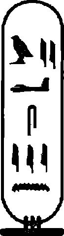

Thoth ayının ilk haftasında, -Tutankhamun'un, İki Diyar
Lordu'nun, Kudretli Boğa’nın, Biçimlerin En Muhteşemi’nin, Güney'deki Horus'un sekizinci yılında-Horemheb ve Rameses ziyaretime geldi. Doğruyu söylemek gerekirse bu değerli ikiliyi hayatım boyunca bir daha hiç gönneyeceğimi düşünmüştüm. Ama ana bahçe kapısından kasıla kasıla içeri girdiler, cübbeleri içerisinde şahaneydiler. Üstleri madalyonlar, tasmalar, broşlar ve yüzüklerden ışıl ışıldı. Kapının dışında, subayları arabalarının bağlarını çözdüler, onları palmiye korusunun serin yeşilliğine götürürken laflayıp kahkahalar attılar. Horemheb eskiye nazaran biraz daha toplu görünüyordu, siyah düğmeyi andıran gözlerinin altında bir yağ yumağı sallanıyordu, her ne kadar vücudu hala sert ve kaslıysa da, hafifçe gıdıklanmıştı. Rameses’in kırışıklıkları artmıştı ama her zamankinden daha zayıftı, gözleri kötü niyet yüklüydü, ince dudaklarında da o alışıldık sırıtış vardı; bana hala pis bir tazıyı anımsatıyordu. Yeterince hoştular, ellerimi avuçları arasına aldılar, bir hizmetkara getirdikleri hediyeleri taşımasını söylediler, Djarka ve Pentju ile şakalaştılar. Rameses haylaz bir tavırla Sobeck’in, "değişmez ziyaretçi"min orada olup olmadığını sordu.
Sadece gülümsedim.
"Sağlığımı sormaya gelmediğinize göre," dedim, "gizli bir planınız olmalı."
İtiraz etmediler. Mavi Lotus Sayvanı'nın kapalı kapıları arkasında görüştük. Bir kaç hoş lakırdının ardından Rameses yelpazesini attı. Buna çok güldüm. Yelpaze gök mavisi renkteydi, sapında altın bir lotus vardı; İmparatorluk Ekibi’nin üst düzey bir subaydan ziyade, bir saray hanımefendisine çok daha uygundu.
''Emekliliğin tadını çıkarıyor musun Mahu?" diye beni küçümsedi.
"Sürgün mü demek istedin?"
"Sürgün." Rameses sırıttı. "Sarayın parfümlü yoğun kokusunu özlemiş olmalısın."
"Ne bunu ne de senin pis kokunu özlemedim."
"Mahu, Mahu, arkadaşlarını özlemiyor musun?"
"Firavun'un gülümseyişini özlüyorum. Milyon yıl yaşasın ve sayısız yıldönümünün tadını çıkartsın."
Horemheb ve Rameses aceleyle benimle hemfikir oldular.
"İlahi Kişi de seni özlüyor."
"Bunu nereden biliyorsunuz? Anladığım kadarıyla çok az sayıda kişinin onu görmesine izin veriliyor."
Horemheb, "Onunla Kraliyet Çemberi'nde karşılaştık," diyerek araya girdi.
"Peki onu nasıl buldunuz?"
Horemheb, "Sessiz, sakin," diyerek omzunu silkti. "Lord Ay, onun sözcüsü." İçerdeki gizli gerilimi, Horemheb’in gözlerindeki kısa süreli imayı hissettim. Rameses beni büyük bir merakla inceliyordu, başı hafıf çe tek yana yatıktı, alt dudağını baş ve işaret parmakları arasında sıkıştırıyordu.
"Anlıyorum ki," diye sessizliği böldüm, "siz, General Rameses, Apiru tarihi konusunda yaptığınız incelemelerle çok meşgulsünüz."
"Bunun nedenini biliyorsun." Rameses sinekliği kaldırdı. "Arkadaşın Sobeck’in sana her şeyi anlattığından eminim, dolayısıyla en iyisi sözümüzü sakınmayalım Mahu."
"Lordum Rameses, bu sizin açınızdan büyük bir değişiklik olacak."
"Akhenaten hala hayatta olabilir. Meryre’nin ise, diğer kafirlerle birlikte Canaan’da saklandığından, ortalığı karıştırıp sorun yarattığından en ufak bir şüphe dahi yok."
"Ama Akhenaten'le birlikte değil, öyle mi?"diye sordum.
"Deli adamla demek istiyorsun."
"Hepimiz onu destekledik General Horemheb."
"Bir süreliğine evet ama bizim şu anda burada olma sebebimiz bu değil." Horemheb gırtlağını temizledi. "Lordum Mahu, tekrar görev başına gelmek ister misiniz?"
"Neden?" diye karşılık verdim. "Casusunuz olmak için mi?"
Rameses, "Oh, hadi ama, haydi," diyerek itiraz etti.
"Oh, haydi ama, haydi General Rameses. Beni başka neden ziyaret ediyor olasınız ki? Güzel gözlerim ve cömert karakterim için olmadığı kesin."
Horemheb, "Senin Elçiler Evi Yöneticisi konumuna atandığını gönnekten memnuniyet duyacağız," diye mırıldandı. "Hititliler’e karşı gerçekleştirilecek diplomatik göreve başkanlık etmen için. Sen onların güçlerini takdir edecek kadar sinsi, bize gerçek tehdit yaratıp yaratmadıklarını değerlendirebilecek kadar zeki-sin."
"Ve Lord Ay’ın yanı sıra size de rapor vereceğim, öyle mi?"
Rameses, "Tabi ki," diye onayladı.
"Canaan’a casusluk yapmaya gitmemi istiyorsunuz, Akhenaten’in kendisini bana göstereceğini ümit ediyorsunuz; garip bir sebepten dolayı, bana karşı özel bir sevgisi var. Ve eğer bunu yaparsa, onu öldüreceksiniz."
Rameses gülümsedi.
"Lord Ay’ın," diye sözlerime devam ettim, "beni kucaklayacağını ve bana görev yüzüklerini vereceğini düşünüyor musunuz? Beni kendi casusunuz olarak geri istediğinizi fark edecektir."
"Sen bizim arkadaşımızsın."
"Ne zamandan beri?"
Horemheb güldü. "Çok iyi Lordum Mahu. Huy ve Maya sizi büyük bir memnuniyetle karşılayacak."
"Ne için? Lord Ay’ı büyük bir dikkatle izleyeceğim için mi?"
"Sözün özüne gelelim." Horemheb öne doğru ilerledi. "İlahi Kişi’nin bizzat kendisi sizin geri dönmenizi istiyor." Şaşırdığımı görünce gülümsedi. "Firavun 'umuz artık neredeyse genç bir adam, on yedi yaşında. Ben onu biraz garip buluyorum. Sağlığının ne ruhen ne de bedenen iyi olduğunu düşünmüyorum. Bunu siz de biliyorsunuz Lord Mahu. Çocukluk döneminde onunla birlikte ya şadınız. Çeşitli patlamalar yaşıyor. Son bir kaç aydır, acılı bir sesle yakarışları arttı, "Mahu Amca nerede?" diye inliyor."
"Neden şimdi?" diye sordum.
Rameses, "Neden olmasın?" diye sertçe yanıtladı. "Belki de bunu daha önce de yapmıştı ama yanında kimse yokken. Senin ve Pentju'nun geri dömnenizi istiyor. Oh, bu arada, o ayyaş nasıl?"
"Her zamanki gibi General, bana sizlerden çok daha iyi bir yoldaş. Yani," doğruldum, "İlahı Kişi benim geri dönmemi istiyor.
Yeni edinilmiş arkadaşlarca desteklenen bir dilek. Pekala, pekala!" Arkama yaslandım. "Aslanlarım, beni şaşırttınız! Bana ger çekten ihtiyacın var mı Horemheb? Mutnodjment'le, Nefertiti’nin kız kardeşiyle evli olduğunu unutma!"
Horemheb, "Eşim ondan," diye lafı yapıştırdı, "altının kumdan farklı olduğu kadar farklı. Babasıyla, o firavun faresi adamla ya da o akrep kız kardeşiyle ortak hiçbir yönü yok. Babasından hoşlanmıyor." Omzunu silkti. "Arkadaşlığımızın başlama sebebi de buydu."
Horemheb cübbesinin püsküllerini çekiştirdi.
"Seni geri istiyorum Mahu. Elçiler Evi’nin başına geçmeni istiyorum; Canaan’da olan biteni keşfetmeni istiyorum. Lord Ay benim, ben de onun peşine casuslar taktık. Sobeck sana onun Mitanniler' e gönderdiği hediyeler ve paradan bahsetmiş olmalı. İlk başlarda, bunun sadece Hititliler’i kontrol altında tutmak için takip edilen bir politika olduğunu düşündüm ama dahası da var.
Aynı zamanda Leydi Tahana’yı da araştırıyor."
Kalbim deli gibi çarptı.
"O Khiya’nın, Tutankhamun'un annesinin baş nedimesiydi.
O ve kocası Aten şehrini gizemli bir şekilde terk etti ve salgın sırasında Mitanni sarayına geri döndü."
"Onu neden arıyor olsun ki?" diye sordum.
"Bilmiyoruz. Bu senenin başlarında, Ekin Mevsimi'nin son ayı boyunca, General Nakhtimin ve askeri birlikler Mitanni elçisiyle buluşmak için Nil’de yelken açtılar. Neden buluştuklarını ya da ne konularda anlaştıklarını bilmiyoruz. Gece vakti Thebes’e döndüler." Durakladı. "Casuslarıma göre, Nakhtimin beraberinde bir adam getinniş, yüzü çakal maskesiyle kapalıymış. Aynı zamanda, bahsedilen bu adamm eski İkametgah Evi'ne, hepimizin Kap'ın
Çocukları olarak eğitildiğimiz yere hapsedildiği duyumlarını aldım."
Şaşkmlığımı saklayamadım. "Bu adam Akhenaten miydi?"
"Hayır." Horemheb kafasını salladı. "Bu adam gençmiş, karnı ve bacaklarından öyle olduğunu söyleyebiliyoruz." Horemheb,
"Olan biteni anlayabilmek için her şeyi denedim," diye itiraf etti.
"N akhtimin’in askerleri saraym o bölümünü yakından korudu.
Son aylarda geri çekildiler, bu da genç adamm gittiği ya da öldüğü manasına geliyor. Şimdi," Horemheb kafasını kaşıdı, "korkuyorum Mahu. Ay ne dolaplar çeviriyor? Tutankhamun’a bir şey mi olacak, Ay tahtı mı talep edecek? Şimdi," gülümsedi, "eğer İlahi Kişi ve Kraliyet Çemberi senden geri dönmeni istese, döner misin?"
"Bunu düşüneceğim."
"Ve eğer geri dönersen, bizim casusumuzdan ziyade müttefikimiz olur musun?"
"Düşüneceğim." Ayağa kalkmaya hazırlandım.
"İlahi Kişi konusunda fazla endişelenmiş görünmüyorsun."
Horemheb bileğimi yakaladı. "O senin sorumluluğunda."
Elinden kurtuldum. "Bu geçmişteydi General. Gücümün yetmediği şeylerden dolayı sorumlu tutulamam."
Tutankhamun'un nazik, badem şekilli gözlerini, sakin suratını anımsadım.
Horemheb, "Umurunda, öyle değil mi?" diye sordu.
Cübbesi arasında duran şeyi hissetti, deri bir kese çıkarttı ve içindekileri torbayı sallayarak ortaya döktü: İçinden Firavun'u Mısır’ın savaş tacını giyinmiş, Savaş Tanrı'sı Montu'nun huzurunda, Tanrıça Nepthys’i arkasına almış, bir düşmanın kafasına vurur halde resmeden altından enfes bir şerit düştü.
"Lord Ay bunu kendisi için biçimlendirsin diye bir kuyumcu tuttu; imalathanedeki bir çırak bize güzel bir kopya yaptı."
Altın şeridi büyük bir dikkatle inceledim. Yakından bakıldığında diğer herhangi bir orijinalden çok daha ham ve kabaydı. Firavun figürü Tutankhamun'du, henüz küçük bir oğlandı, ancak altının tepesindeki hiyerogliflerden, Ay’ın Tanrı Montu ve Ankhesenamun'un da Tanrıça Nepthys olduğunu fark ettim.
Horemheb altını elimden alarak, "Ay bunu kendi şahsı kullanımı için yaptırdı," dedi. "Gittikçe daha kibirli bir hal alıyor. Kendisini Tanrı, Firavun'un efendisi gibi görüyor."
Horemheb yalan söylemiyordu. Hiçbir Mısırlı böyle bir manzara tasarımının hayalini kurmazdı. Firavun, Tanrılar dışında hiç kimseye hizmet etmezdi; o onların eşleniği, onların amaçlarının yaşam bulan enkamasyonuydu.
"Artık Tutankhamun’a dair ters giden bir şeylerin olduğunu biliyoruz." Rameses ayağa kalktı. "Akhenaten’in birisine boyun eğebileceğini hiç hayal edebiliyor musun Mahu? Ay, pozisyonunu kötüye mi kullanıyor? Sarayda Ay ve torunu Ankhesenamun'un tanrılar gibi giyinip Firavun 'u önlerinde eğilmeye mecbur bıraktıklan gizli törenler mi gerçekleştiriliyor? Şimdi, sen düşün!"
Günün geri kalanı boyunca sayvanda oturdum, zihnim fırıl fırıl dönüyordu. Hizmetkarlar bana yiyecek ve içecek getirdi. Neden Ay, Mitanniler arasından genç bir adamın peşine düşmüştü?
Ne planlıyordu? Karanlık çöktü. Akşam esintisi tazeleyiciydi, yarı aralık kapıdan hizmetkarları görebiliyordum. Djarka geldi. Akşam yemeğinde ona ve ailesine katılmak ister miydim? Reddettim, uzaklaşıp gitti. Bunun kısa bir süre sonrasında Pentju geldi, pe şinde şarap testisi ve iki kadeh taşıyan hizmetkarları vardı.
"Kudretli savaşçıların ziyaretlerini işittim." Pentju minderlere oturdu. "Beni sordular mı? Sanıyorum hayır."
"Senin bir banyoya," dedim. "Ve tıraş olmaya ihtiyacın var."
"Benim ihtiyacım olan şey Mahu, bir kadeh şarap ve genç bir hizmetkar. Bu iki gaddar adi herifin buraya neden geldiklerini bana anlatana kadar da davranışlarımla etrafa rahatsızlık vereceğim."
Ona benden saraya geri dönmemi istediklerini söyledim.
Ona Elçiler Evi'nden ve sebebini sadece Tanrılar bilir, Ay'dan,
Mitannilerle ilişkilerinden ve Nakhtimin’in Delta'dan beraberinde getirdiği o garip esirden bahsettim. Pentju oturdu, yüzündeki tüm renkler yok olmuştu, ağzı ardına kadar açıktı, gözleri boş boş bakıyordu, sanki gece içerisinde bir tür dehşete kapılmış gibiydi.
Belki de ben çok içmiş, öyle olduğunu hayal etmiştim. Kadeh
Pentju'nun elinden kaydı ve sanki nöbet geçiren bir adam gibi titremeye başladı. Adını seslendim ama sanki hiç göremiyormuş gibi boş boş baktı. Boğazının gerilerinden garip bir ses çıktı. Bu şok beni ayılttı. Sayvandan ayrıldım, bağırarak yardım istedim.
Geri döndüğümde, Pentju yerde kasılıyordu, kasları sertti. Kustu ve kısa bir an için boğulduğunu zannettim. Bir hekim geldi ve
Pentju'nun boğazının tıkanmadığını teyit etti, sonra dişlerinin arasına deri bir takoz sıkıştırdı ve seslenerek battaniye istedi.
Sobeck’e bir ulak yolladım, ondan ağız, kalp, mide ve anüsle ilgilenen en iyi doktorları göndermesini istedim. Zihinsel telaştan kaynaklı bir nöbet teşhisi koydular. Doğrusunu söylemek gerekirse, tıpkı tüm diğerleri gibi, bunlar da yararsızdılar. Gümüşümü aldılar ve bana Pentju'nun yatak istirahati yapması ve şarap içmemesi gerektiğini belirttiler. Ben de kendi kendime bu sonuca ulaşabilirdim, dolayısıyla topunu dışarı attım. Sobeck olan biteni öğrenince sadece başını salladı, nefesinin gerisinden bir ıslık çaldı ve görevlerini başaramadıkları için casuslarına küfretti. Horemheb ve Rameses’in bana anlattıkları konusunda en ufak bir fikri olmadığını itiraf etti. O an için, bu kadar sınırlı bilgiyle, yapabileceğim pek fazla bir şey yoktu. Pentju’ya hastabakıcılık yapmakla çok meşguldüm, diğer yandan da sözlerimin onda neden bu kadar güçlü bir tepkiye sebep olduğunu da merak ediyordum. Doktorlardan bazıları Pentju'nun şikayetlerinin gesnu'nun-şeytani bir varlık ya da iblis-işi olduğuna inandılar. Onlarla kalpten mutabık kaldım. Bu Ay ve onun Akhmin ekibine mükemmel şekilde uyan bir tanımlamaydı.
Haftalar geçti. Şarabından mahrum bırakılan Pentju gittikçe kuvvetlendi. Onunla dalga geçtim: O bir Kap Çocuğu'ydu, asker olarak eğitilmişti, dolayısıyla şişman olmasına rağmen, bir öküz kadar güçlü olmalıydı. İçinde bulunduğu duruma tanı koyabilecek kadar iyi bir doktordu. O bu yaşananları, sevgili oğlunun savaşta öldüğü haberini aniden alan bir annenin yaşadığı şaşkınlığa benzetti. Tüm doktorlara küfretti.
"Eğer sağlıklı kalmamı istiyorsan," diye bana bağırdı, "o pislikleri benden uzak tut."
Kendisini en sevdiği oğlunu kaybeden bir anneyle kıyaslaması beni hayrete düşürdü; onu sorguladım. Bir akşam Pentju bana itirafta bulunmaya, ruhunu hırçınlaştıran Tchat 'tan, suçluluktan kurtulmaya, karar verdi. Yemeğimizi yeni bitirmiştik: terbiyelenip baharatlanmış, kızartılmış antilop şeritleri. Beklenmedik bir şekilde yemeğini ileri doğru itti ve ağlamaya başladı. Bir süre onu hıçkırıklarıyla baş başa bıraktım, sonra benden kendisinin ruhbanı olmamı istedi.
"Tutankhamun'un," diye sözlerine başladı, "Akhenaten’in değil de benim oğlum olduğuna dair anlatılan küfür yüklü hikayeleri anımsıyorsun, öyle değil mi?"
"Evet, ama sen bana Firavun'un gerçek varis olduğunu temin etmiştin."
"Doğruyu söylemiştim: O gerçek varisli ve hala da öyle."
Pentju iç çekti. "Onu Khiya doğurdu."
"Bana bunu da söyledin."
"Her ne kadar evli olsam da, onu gerçekten sevdim Mahu.
Onun güzel bedenini Nefeıtiti’nin ona vermekte olduğu iksirlerden temizledim." Sulandırılmış şarabını yudumlayarak bir süre sustu. "Aten Şehri'nde olmanın nasıl bir şey olduğunu biliyorsun.
Nefertiti kovanın Kraliçe Arı 'sı gibi herkese hükmetti; iğnesi tehlikeliydi. Akhenaten’i Khiya’ya kendi evini vermeye razı edebildim. Akhenaten, Nefertiti’nin kibrinden bıkarak, ikinci karısına, küçük Mitanni prensesine geçici bir ilgiden ötesini göstermeye başladığında, hepimiz o şehre geleli üç yıl olmuştu. Pekala." Pentju gözlerini kırptı. "Vatana ihanet ettim. Leydi Khiya ile cinsel ilişkiye girdim. Hamile kaldı, korkmuştu, ben de öyle. Bunu herkese nasıl açıklayacaktık? Hasta rolü yaptı ve kendi bölmesine çekildi. Sadece ben, Leydi Tahana ve kocası gerçeği biliyorduk. Çocuk, o oğlan, yumurtadan prematüre doğdu, bu altıncı ve yedinci aylar arasında bir dönemde gerçekleşti. Buna rağmen, bebek güçlüydü.
Güvenebileceğimiz bir süt anne tuttuk." Sustu. "Şaşırdın mı?"
"Hem evet, hem de hayır," diye yanıtladım.
"Khiya ve Leydi Tahana’nın birbirlerine yakın oldukları çok iyi biliniyordu. Korkmuştuk. Bir cariyeyi, Muhteşem Amenhotep’in Kraliyet Ziynetleri'nden tekini ayartınca Sobeck’in başına gelenleri biliyordum. Büyük bir şans eseri lekelenmiş ve bir vaha hapishanesine gönderilmişti; cariye bir kafese yerleştirilmiş ve yabani hayvanlar tarafından parçalanmıştı." Pentju ağzının kenarındaki tükürüğü sildi. "Khiya hem çocuk hem de ikimiz için telaşlanmıştı. Akhenaten’in öfkesinden ve daha da önemlisi Nefertiti'nin ölüm saçan gazabından korktu. Altın Kişi Hathor' a ve aklına gelen diğer Tanrı ya da Tanrıça'lara özel adaklar adadı. Sonunda duaları kabul oldu. Leydi Tahana bir plan tezgahladı: Çocuğu kendi oğlu olarak evlat edinecek ve Mitanni topraklarına geri döneceklerdi. Her ikisi de Mısır tebaası değildi; Akhenaten ’in iznine ihtiyaç duymayacaklardı. O ve kocası, çocuk üç aylık olunca ayrıldılar. Khiya’nın ilk hamileliği böylece sır kaldı. Aten Şehri ne durumdaydı, biliyorsun. Akhenaten ve Nefertiti kendi ilişkileriyle uğraşmaya başladılar. Khiya hamileyken, Akhenaten onu üç kez ziyaret etti. Birincisinde, Khiya’nın aylık kanamaları henüz kesilmişti; bu sorun değildi. Diğer ikisinde, hasta rolü yaptı, ateşlenmiş gibi davrandı." Pentju suratını astı. "Bir doktor olarak, bu semptomların ortaya çıkmasına yardımcı olabildim."
"Ya Mitanni çocuğu alıp gidince ne oldu?"
"Khiya ve ben rahatladık. Böyle bir şeyin bir daha yaşanmayacağına ant içtik. İlk hamileliği onu çok daha kırılgan yapmıştı, Akhenaten onunla yatınca tekrar hamile kaldı. İlk çocuğun ne durumda olduğunu hep merak ettim ama bunu soruşturmak çok tehlikeliydi."
"Peki, Ay bunu nasıl keşfetti?"
"O yılan hizmetkarların tekinden, bir muhafızdan bir şeyler işitmiş olabilir; birileri konuşmuş olmalı. Ay’ın arşivleri taraması ve Leydi Tahana’nın yanında bir çocukla neden bu kadar aniden çekip gittiğini bulması pek de zor olmamıştır. İlk başlarda, büyük olasılıkla yaşanan diğer krizlerden dolayı çok meşguldü ama Ay bir firavun faresidir. Gerçeği öğrenmeden rahata ermeyecekti. Mitanni'ye genç adamı teslim etmesi için rüşvet vermiş olmalı."
"Oğlan şimdi kaç yaşlarındadır?"
"On sekiz ila on dokuz arası bir şey olmalı. Mısır parası ve erzağına çaresiz bir şekilde ihtiyaç duyan Mitanni bir şekilde ikna edilmiş olmalı. Ay’ın ne hikayeler anlattığını sadece Tanrılar bilir.
Belki de bu gizemli oğlanın kendi gayrımeşru çocuğu olduğunu ima etmiştir."
"Peki, Ay onu neden istesin ki?"
"Sen de bunu benim kadar iyi biliyorsun Mahu: Kan davası.
Khiya gayrımeşru bir çocuk doğurdu ama aynı zamanda Firavun’a yaşayan bir varis de verdi. Nefertiti bunu başaramadı. Daha da kötüsü, o erkek varisin doğumu Akhenaten ve Nefertiti arasındaki ölümcül gediğe sebep oldu. Ay, öç almak isteyecektir. Khiya onun sevgili kızını yok etti, büyük Kraliçe'nin çöküşünün sebebi oydu."
Öğrendiklerim üzerine düşünerek oturdum.
"Bana anlatmak zorunda değilsin Mahu." Pentju beni hayallerimden kurtardı. "Ay onu öldürdü. Oh, Mitanniler'c oğlanın ateşlendiği ya da hastalandığı yönünde bir bahane uyduracaktır.
Ay, iksirleri en az senin ve benim kadar iyi biliyor." Pentju'nun sesi titredi ve yüzünü elleriyle kapattı. "O adam oğlumu öldürdü,"
diyerek hıçkırdı. "Sevgilimi öldürdü."
Pentju yavaş yavaş kendisine gelirken, ben Tanrılar ya da şeytanlar araya girene kadar, ne yapacağımı düşündüm.
Yılın son ayının son birkaç günü içerisinde, saraya emirle davet edildik. Bir kraliyet ulağı, gümüş görev asasını taşıyarak, konağımıza geldi, yanında altı silahlı Nesu, Firavun'un korumaları vardı. Ulak imparatorluk kabartmasıyla mühürlenmiş bir rulo taşıyordu; dokümanı öptü ve mührü kırdı. Davet oldukça kısa ve açıktı: Lord Mahu ve Lord Pentju, ekim mevsiminin ilk ayının on altıncı gününde, Tau-Retui’nin, Firavun'un ve onun Kraliyet Çemberi'nin huzuruna çıkacaktı. Öyle de yaptık, tekrar Thebes ’in kalbinde olmak çok güzeldi, rıhtımdan uzaklaştık ve fakir kenar mahallelerden ilerledik, pis havuz ve kokmuş çöp yığınlarından sakınarak sefil kulübelerinin önünden geçtik. Sürgünde geçen yalnızlığın ardından, kırmızı gözlü dilenci kalabalıkları dahi göze hoş görünüyordu.
Thebes’in gittikçe büyüyen zenginliği, ücra kasabalardan köylüleri, tacirleri ve işçileri de beraberinde getirmişti. Bu insanlar ülkenin her yerinde kendi köhne evlerini inşa etmişlerdi. İçlerinden bazıları başarılı olmuş, çoğu olamamış, dolayısıyla ucuz brendi bardakları içerisinde kendi elemlerinde boğulmuşlardı.
Ama herkes meşguldü. Kirli kıyafetleri içerisindeki kadınlar karanlık kapı eşiklerine çömelmişler, değerli mısırlarını havan tokmağı ve taş arasında öğütüyorlardı. Çocukları sokak boyunca, kurutup yakacak olarak kullanacakları ve dolayısıyla da havayı keskin bir kokuyla pisletecekleri hayvan pisliği üzerinde kovalamaca oynayıp kavga ediyorlardı. Daha ilerde tüccar tezgahlarının önünden geçtik, adamlar Canaan' dan getirilen mücevherleri, Libya' -
dan getirilen deri eşyaları, Babil' den getirilen yağ ve nakışları sergiliyorlardı. Şekerciler sinekleri ürünlerinden uzak tutmakla meşguldüler, diğer yandan da insanlara korunmuş hurmalar, şuruplar, bal ve baharatlardan yapılma pastalar sunuyorlardı. Yanlarında, çırakları lezzetli biralar yapmak için bir havanda badem ve fındık dövüyorlardı. Tezgahları kanla boyalı kasaplar kaz ve öküzleri dörde bölüyor, küçük kız ve erkek çocuklar, tıpkı doğduklarında oldukları gibi anadan üryan bir halde, böcekleri kovalamak için ellerinde sineklikler koşturup duruyorlardı. Ayakkabıcılar nazik terliklerden yürüyüş botlarına kadar bir çok ürüne sahiptiler. Keseleri altın ve gümüşle dolu olan müşteriler kuyumcuların önünde sıradaydılar.
Konağımın sessizliğinin ardından, etrafta dolanıp duran insan selinin gürültüsü ve sürekli değişen renginin tadını çıkarttım.
Bağırış ve çığlıklar, taze kanın, pişen etlerin ve kuruyan derinin zıt kokuları, yanınış bal, baharat ve parfüm rayihalarıyla birbirine karışıyordu. Çeşitli milletlerden gelen şarkı yazarları, hikaye anlatıcıları, müzisyenler ve dansçılar ilgi çekmek için birbirleriyle yanşıyorlardı. Fahişeler pazarlıklarını ara yol girişlerinde yapıyor, müşterilerini kendilerine doğru çekiyor, sert tuğla duvarı döşek gibi kullanıyor ya da dünyayı umursamaz bir tavırla hemen önlerinde yere diz çöküyorlardı. Biraz daha ilerde, kışlaya uzanan kapı girişinin yakınında, Savaş Evi’nin ordu yazmanları ordudaki askerlerin kayıtlarını yaparken, kadınlar bağırıp toz içerisinde yuvarlanıyordu. Manzaranın tadını çıkartmayı sürdürdüm, Pentju ise omuzları çökük yürümeye devam etti, başı tıpkı kazığa oturtulma cezasına çarptırılmış bir adam gibi önündeydi. Leopar kiltli, gümüş zincirli ve sallanan beyaz kuş tüylü Nubian paralı askerleri bizi kalabalıktan uzak tuttular, Üzerlerinde Amun'un koç kafası bulunan büyük oval kalkanları çevremizde bir duvar oluşturmuştu.
Sonunda, beyaz ve kırmızı taş duvarları tamir edilen ve tıpkı bir fener gibi parlayan Malkata Sarayı'na doğru uzanan Altın Şahin Caddesi'ne vardık. Muazzam bakır kaplı kapıları güzel tasarlanmış bahçelere doğru açıldı. Durup bu yeni bitkilerden bazılarını incelemek istedim ama muhafız başı kafasını olumsuz manada salladı, dolayısıyla yürümeye devam ettik. Bizi bir binanın giriş antresinde bıraktılar, burasının duvarları altın rengi zeminin üzerinde, arka fon oluşturan açık yeşil alana doğru hamle yapmış gümüş rengi antiloplarla dekore edilmişti. Hayvanların her iki yanlarında gümüş palmiyelerle süslenmiş birer koyu sarı friz yer almaktaydı. Pentju'nun ilgisini resme çekmeye çalıştım ama o bakışlarını yere odaklayarak oturdu. Ondan aptalca ya da tehlikeli hiçbir şey yapmayacağına dair gönülsüz bir yemin almıştım. Bir kahya bize buzlu meyve içeceği servis etti adamın bunları önce tatmasında ısrar ettim. Şaşırıp şoka girmişti ama itiraz etmedi.
Kısa bir süre sonra geri döndü ve Yunus Odası'na, Kraliyet
Çemberi'nin toplanacağı büyük konsey odasına alındık. Kobalt mavisi duvarlarında gümüş renkli yunuslar altın rengi dalgaların Üzerlerinden sıçrıyorlardı. Cilalı taşların dizili olduğu zemin tavandaki mozaikleri yansıtıyor, böylece ortaya daha çok sayıda yunus ve diğer deniz yaratıkları çıkıyordu. Odanın uzak ucunda, yüksek kapaklı bir kürsüde, altın kaplamalı üç taht yer almaktaydı: Bunların sırt kısımları ve kol yerleri altın yapraklarla dekore edilmiş, bacaklarına değerli taşlarla kakmalar yapılmıştı; oyulmuş ayakları abanoz ve gümüş kakmalı, cilalı siyah ayak tabureleri üzerinde duruyordu. Boyutça daha küçük olan tahtlar en büyüğünün ihtişamına sahip değildi ama verdikleri mesaj oldukça açıktı.
Pentju, "Firavun’a uygun bir taht," diye fısıldadı. "Ama yine de burada bir tane Ay, bir tane de Ankhesenamun için yer var."
Tahtlar, yarım daire şeklinde yerleştirilmiş gümüş yüzeyli masalara ve Kraliyet Çemberi üyelerinin çömelecekleri minderli oturaklara dönüktü. Toplamda on saydım. Ortada yazmanlar için, Üzerlerinde yazı paletleri, kamış kalemler, papirüs ruloları, kıımızı ve siyah mürekkep hokkalarının yer aldığı üç benzer masa dunnaktaydı.
Daha henüz gelmiştik ki trompetler çalınmaya, ziller vurulmaya başlandı ve konsey odasının girişindeki çift kanatlı kapı ardına kadar açıldı. İçeri tütsü kaplarını sallayan iki ruhban girdi, bunları imparatorluk yelpaze taşıyıcıları takip etti. Kraliyet Korumaları, savaşta düşmanın kafasını kestikleri için nişan alan muzaffer savaşçılar içeri girerken, diğerleri yerlerini aldılar. Muhafızlar gelecek diğer subaylara da yer açtılar. Konsey odası dolmaya başladı. Daha çok sayıda zil çaldı, trompetler öttürüldü, içeri bir ulak girdi ve Firavun'un isimlerini seslendi.
"İki Diyar Efendisi, Kanunların Gücü olan O, tacı giyen
Altın Şahin. Tanrıları memnun eden kişi, Yukarı ve Aşağı Mısır'ın Kralı. Ra’nın Gururlu Gösterimi. Amun'un Yaşayan İmgesi ... "
Burnumuzu yere dayayarak öne kapandık. Tutankhamun’a içeri girerken yan gözle şöyle bir baktım, devlet kostümlerine bü rünmüştü, kafası etrafında altın bir Uraeus'un yer aldığı bembeyaz bir başlıkla kaplıydı. Pilili keten bir pantolon giyinmişti, bunun arkası bir çakal kuyruğuyla süslenmiş, önü ise altın ve minelerle kaplı, üst üste binmiş sertleştirilmiş bir önlükle tamamlanmıştı. Bunların hepsinin üzerinde uzun, kolsuz, kar beyazı renkte bir cübbe yer almaktaydı, boğazı Nekhbet’i, Akbaba Tanrıça’yı resmeden parlak bir gerdanlığı gözler önüne serecek tarzda açıktı; bu değerli taşlarla dolu göz kamaştırıcı bir parçaydı. Ayaklarında gümüş tepeli sandaletler vardı. Tutankhamun yavaş yavaş, oldukça hantal bir şekilde, kafası panter şeklinde oyulmuş bastonuna dayanarak yürüdü. Hala o masum, çocuksu, neredeyse kadınsı görünüme sahipti: şişkin yanaklar, hafif aralık dudaklar, siyah sürmeyle çevrili badem şeklindeki gözler. Omzunun üzerinden, buram buram cinsellik kokan güzelliğin çarpıcı bir imgelemi olan Kraliçe Ankhesenamun’a bakarken gülümsüyordu. Oh, Ankhesenamun değişmişti! Şehvet yüklü suratını kalın, gür, örgülü bir peruk çevreliyordu, parlak koyu renkli gözleri yeşil sünneyle vurgulanmıştı, pudralanmış teni boynunda, el ve ayak bileklerinde ve parmaklarındaki ışıldayan mücevherlerle iyice dikkat çekici bir hal almıştı. Katmanlardan oluşan kolsuz pırıl pırıl bir cübbe giyinmişti, belinde parlak kırmızı bir kuşak vardı, kalın tabanlı sandaletleri üzerinde zarafetle ilerliyordu. Elinde gök mavisi bir yelpaze vardı, kenarı gümüş çerçeveliydi, bunu yüzünü saklamak için kullanıyordu ama gözleri açıktaydı.
Onları arkadan Ay takip etti, kafası kazılıydı, şahini andıran suratı yağdan parlıyordu. Üst rütbesinin tüm görkemini kuşanmıştı, güzel bir çift kırmızı eldiveni sıkı sıkı tutuyordu, bunlar Firavun'un şahsi lütfunun bir göstergesiydi. Onu diğer lordlar takip etti: Nakhtimin, Huy, Maya, Horemheb, Rameses, Anen, Amun'un Baş Ruhbanı; Mısır’ın büyük efendilerinin tümü. Pahalı cübbeleri, altın gözlü yürüme bastonları, muhteşem yelpazeler, yağlanmış ve parfümlenmiş yüzler, etraflarına güç ve zenginlik yayıyordu. Maya, kalın parlak siyah peruğu, boyalı yüzü ve yüksek topuklu ayakkabılarıyla, bir kadına her zamankinden daha fazla benziyordu. Kafasını çevirdiğinde inci küpelerine gözüm takıldı ve bir kadın olmayı umutsuzca isteyen bu parlak adama bir kez daha şa şırdım. O ve Sobeck arasındaki ilişki, ikincisinin evliliğiyle birlikte soğumuştu. Söylentilere bakılırsa, Maya artık yakışıklı ve genç erkeklerden oluşan bir haremin tadını çıkartmaktaydı.
Ruhbanlardan teki ilahi söylemeye başlarken, Tutankhamun tahtına oturdu.
Oharnun
Sessizlik içerisinde izleyen,
Bilgeliği kavranıp ölçülemeyen ...
Ardından, askerler ve subaylar odadan çıkartıldı. Ay ve Ankhesenamun yerlerini aldılar, diğerleri de onları takip etti, yazmanlar ortaya çöktü. Ay, geriye kalan iki masada yerlerimizi almamızı söyleyene kadar, Pentju ile birlikte dizlerimizin üzerinde kaldık.
Çalışma levhasını Ay hazırlamıştı; Pentju ve ben listenin başındaydık.
Ay, "Firavun'un büyük lütfundan dolayı," dedi, "İlahi Kişi yüzünü onlara açmaya ve onlara gülümsemeye karar verdi. Bu sebeple ... "
Tek bir kelimeyle Pentju Kraliyet Doktorluğu'na ve ben de yabancı ilişkilerinin sorumluluğunun da verildiği Elçiler Evi Yöneticiliği'ne atandım. Tüm bu süre boyunca bana mutluluk içerisinde bakan Tutankhamun 'u seyrettim. Arada sırada, yaşadığı heyecandan dolayı Ankhesenamun’a dönüyordu. Ankhesenamun tahtına tembel tembel oturmuştu, sandaletli güzel ayaklarından teki buyurgan bir şekilde yeri dövüyordu. Tutankhamun' a göz kırpmak ya da hafifçe elimi kaldınnak üzereydim. Ay, bizim onu adlandırdığımız haliyle Büyük Firavun faresi, diğer konularla ilgilenmeye girişince, Pentju yanımdan adama ters ters baktı. İlgilenilen şeylerin çoğunluğu sıradandı, büyük kısmını Canaan’da yaşamlanlar oluşturuyordu. Ehemmiyetsiz küçük prensleri hala atışıp hadise çıkartmaktaydılar; gerçek tehlike bölgede Mısır’ın müttefikleri olan Babilliler ve Mitanniler’e büyük bir tehdit oluşturan Hititlilerdi. Horemheb ve Rameses yine eski martavalı okudular, askeri müdahaleye ihtiyaç olduğunu dile getirdiler. Ay, onlarla ters düşmek isteğinde değildi, bu noktada sorulması gereken şey bu harekatın ne zaman ve nasıl yapılacağıydı. Çöl aslanları bununla tatmin olmuş gibi göründü ve toplantı sonlandı.
Pentju ile birlikte Kraliyet Tahtı'nın önüne getirildik. Ankhesenamun her zamanki olağan flörtçü tavrına büründü, öne doğru uzanarak altın renkli cübbesinin bollamp aşağı sarkmasına, uçları gümüş rengine boyanınış göğüslerinin görünmesine izin verdi. Gözlerinde sanki bunca zamandır nerede olduğumuzu merak eden o masum, sorgulayan bakışlar vardı; çok coşkuluydu, yanağımı okşuyor ya da Pentju'nun kelleşmeye başlayan kafasına hafifçe vuruyordu. Elleri soğuktu, parfümü Mısır’ın sağlayabileceğinin en pahalısındandı, mavi lotus suyundan yapılmıştı. İyiliğimiz konusunda özenli ya da meraklı değildi. Her ikimiz de onun gözlerinden, bu kraliyet kaltağının bize içten içe güldüğünü görebiliyorduk. Ancak, Tutankhamun bizi gördüğünden çok memnundu, o kadar ki neredeyse saray protokolünü unutmuştu, heyecandan yerinde sabit oturamıyordu. İkimize de birer altın tasma verdi, benimkini boynuma takabilmek için daha yakımına uzandı, ardından dudaklarım yanaklarıma sürttü ve bana Amca dedi. Bu süre zarfında, Ankhesenamun elinin ardından kıs kıs güldü.
Ay, Tutankhamun’a saray görgü kurallarım hatırlatmak için yüksek tonda öksürdü. Genç Firavun kim olduğunu ammsadı ve yüzünü ifadesiz tutmaya çalıştı ama bu çaba faydasızdı. Bana Amca olarak seslenmeye başladı, beni ve Pentju'yu ne kadar özlediğini, onunla balık ya da kuş avlamaya gitmemiz gerektiğini veya, belki de, onun savaş arabasını alarak doğu çölüne açılabileceğimizi söyledi. Her ne kadar vücudu babasının bir takım özelliklerini barındırıyor olsa da, yeterince sağlıklı görünüyordu, gözleri ışıl ışıldı, yanakları dolgundu: Hafif çıkık bir göğse, geniş kalçalara, uzun el ve ayak parmaklarına, ince bacaklara, baldırlara ve kollara sahipti. Aym zamanda hareket ederken bir tür rahatsızlık da yaşıyordu.
Huzura kabul sonlanınca, Kraliyet Çemberi'nden bazıları bizi kutlamak için yammıza geldi: olağan gülümseme ve tokalaşmalar yaşandı, omuzlar sıkı sıkı tutuldu, sözler verildi, davetler yapıldı. Onlar bana, ben de onlara yalan söyledim ama sarayın doğası buydu. Şu eski deyişi ammsadım: 'Firavun’a güvenme ya da Mısır’ın savaş arabalarına inanma.' Sadece Pentju'nun Lord Ay'la yüzleşmeye kalkışmayacağını ümit ettim.
Günün ilerleyen saatlerinde, sarayın diğer tarafındaki Gümüş Şahin Odası'nda büyük bir ziyafet verildi. Buraya sadece Kraliyet Çemberi üyeleri davet edilmişti. Her bir misafirin önüne üzeri parlak Babil kumaşıyla kaplı uzun masalar yerleştirildi, değerli taş kakmalı kadehler ve saf gümüş tabaklar kullanılmaktaydı.
Odanın etrafında hizmetkarların kadehleri sürekli olarak tepeleme dolu tutabilmeleri maksadıyla büyük toprak şarap testileri dizili duruyordu, hizmetkarlardan diğer bir kısmı Üzerlerine baharat serpilmiş su kabukluları, özel bir sosta kızartılmış lotus ve değişik türdenet servisi yapmaktaydı: antilop, tavşan, keklik, dana ve yaban eşeği. Önümüze piramit oluşturacak şekilde yerleştirilmiş meyve grupları konulmuştu: üzümler, karpuzlar, limonlar, incirler, narlar.
Odanın ortasında, zamanlamayı bir kamışla yöneten harem ağasının dikkatli bakışları altında hafif müzik çalan, harplar, davullar ve diğer müzik enstrümanlarının yer aldığı küçük bir orkestra mevcuttu. Gecenin ilerleyen saatlerinde aramıza katılmaları beklenen Firavun ve eşine bir yer ayrılmıştı ama bize katılmadılar.
Diğerleri sarhoş olurken ben Ay’ı seyrettim, çeşitli mesajlar getirip götüren hizmetkar silsilesinden çıldırmış görünüyordu. Sonunda galeyana gelerek masasından kalktı ve dışarı çıktı. Kısa bir süre sonra hizmetkarlarından teki geri döndü, bana ve Pentju’ya oradan ayrılmamız gerektiğini fısıldadı. Bizi süratle güzel galeri ve geçitlerden geçirdi, fıskiyelerin kendi müziklerini oluşturdukları hoş kokulu bahçe ve avluları aştık. Sonunda sarayın merkezine, Kraliyet Apartmanlan'na ulaştık. Ay bizi giriş odasında beklemekteydi. Nakhtimin ve diğer bir takım üst düzey görevliler de oradaydılar. Kapının arkasında, Ankhesenamun'un yüksek sesle ağladığını işitebiliyordum.
Ay, "Size neden geri dönmeniz istendiği söylendi," dedi.
"Aslına bakılırsa bunun iki nedeni vardı; şimdi ikincisini göreceksiniz."
Pannaklarını şaklattı, büyük çifte kapılar ardına kadar açıldı ve uzun, dekore edilmiş odaya Ay’ı takip ederek girdik, içerisi yağ lambalarıyla hıı.fıfçe aydınlatılmıştı, uzak ucunda açılmış büyük bir pencere vardı. Odanın ortasına, üzerinde sadece peştamalı olan Tutankhamun çömelmişti, tek elinde ahşap bir aslan, diğerinde oyuncak bir antilop vardı. Bunları yere yerleştirdi, aslanı antilopu kovalıyonnuşçasına koşturdu. Ay’ın yanından ona sürtünerek geçtim, Pentju da arkamdaydı, büyük bir aceleyle Tutankhamun’a doğru koşturduk.
"Lordum," diyerek yere çömeldim. "Sorun ne?" Etrafı koklayıp yere baktım: Peştamal kirlenmişti; Tutankhamun altını ıslatmıştı. "Lordum," diye tekrarladım, "iyi misiniz?"
Tutankhamun ahşap oyuncakları kaldırdı ve birbirine vurdu.
Pentju sessizce lanet okudu. Tutankhamun bizim varlığımızdan tamamen habersiz görünüyordu.
"Gaga." Ahşap aslanı kaldırdı ve tıpkı karyolasındaki bir bebek gibi bunu emmeye başladı. Pentju fısıldayarak dua ediyordu. Ben inanmaz gözlerle olan bitene baktım: Mısır’ın Firavun'u, İki Diyar Lordu bir deli değil, zavallı bir bebekti. Ona dokunmayı denedim ama ürküp geri çekildi, elindeki oyuncakların içinde kaybolmuştu. Arkamda ayak sesleri yankılandı.
"Ne zamandır böyle?" diye sordum.
Ay, "Bu tür nöbetler pek sık yaşanmıyor," diye yanıtladı,
"ama ortaya çıktıklarında da oldukça şiddetli gözlemleniyorlar.
Bunlara aşın heyecan ya da yüzleşme sebep oluyor gibi görünüyor. Bazen bu hale geliyor, bazen de aşırı derecede münakaşacı ve saldırgan oluyor."
Tutankhamun rahatlamaya başlayana ve mahmurlaşana kadar bir saat civarı bekledik. Yerde uyumasına izin verdik, onu mümkün olduğunca rahat ettinnek için minder ve battaniyeler getirildi. Ay bizimle giriş odasında buluşmaya ikna oldu. Nakhtimin’in de orada kalmasını istedi ama Pentju onun gitmesinde diretti.
Doktoru daha önce hiç bu kadar soğuk ve acımasız görmemiştim.
O geceyi hiçbir zaman unutmayacağım. Ay’ın arkasındaki pencere, tıpkı Ölüler Diyarı kadar karanlık bir geceye açılıyordu.
Tek bir yıldız yoktu, gecenin tek bir çiçeği dahi görünmemekteydi; etraf sanki kuşların, gece yırtıcılarının ve Nil' deki yaratıkların tümünün sesleri susturulmuşçasına sessizdi. Sadece üç adam bir odada oturmuştu, Pentju ve benim olmaması için dua ettiğimiz yüzleşmenin sınırındaydık.
Pentju, "Benim oğlum muydu?" diye sordu.
Ay, "İlahi Kişi ... " diyerek araya girdi.
Pentju, "O bekleyebilir," diye bağırdı. "Oğlum, Leydi Khiya’nın çocuğu, Mitanni'ye onu sana vermesi için rüşvet yedirdin."
Ay, "Yapmadım ... " diye kekeledi.
Pentju, "Yaptın," diyerek adamın sözünü kesti. "O öldü, öyle değil mi? Neden onu buraya getirdiniz?"
Ay, "Onun gerçekte kim olduğunu keşfetmek istedik," diye yanıtladı.
"Onun kim olduğunu biliyordunuz."
"Üvey kardeşine, Lord Firavun’a çok benziyordu." Ay’ın ses tonu içtendi ama gözlerindeki bakış ürperticiydi. Onun ne yapmaya çalıştığını fark ettim.
"Bunu düşündün mü?" diye sordum. "Evet, düşündün, öyle değil mi? Onları birbirinin yerine geçirmeyi ciddi derecede düşündün, onun için onu buraya getirttin. Birbirlerine çok benziyorlardı! Tutankhamun'u çok az sayıda kişi görüyor, diğerleri ise yanına yaklaşamıyor."
Ay, serinkanlı bir şekilde bana baktı.
Pentju, "O Firavun’a çok benziyordu dedin, değil mi?" diye ses tonunu hiç değiştirmeksizin sordu. "Yani o öldü, öyle mi?"
Ay, "Oğlan güçlü kuvvetliydi," diye yanıtladı. "İyi bir adam Pentju, zeki ve etkileyici. Ateşlendiği için öldü-"
Pentju ileri doğru atıldı, onu tutup geri çektim.
"Ateşlenip öldü." Ay sakin kaldı. "Ama sen onu benim öldürdüğümü, katledilmesi için buraya getirttiğimi düşünüyorsun, öyle değil mi?" Parmağındaki yüzüğüyle oynadı. "Ben bir sırtlanım,"
diye itiraf etti. "Öldürüyorum, çünkü buna mecburum, çünkü ölmek istemiyorum."
Pentju, "Sen Khiya'dan nefret ettin," diye haykırdı.
Ay kafasını olumsuz manada salladı. "Ondan nefret etmedim."
"O senin kızının yerine geçti."
Ay, "Nefertiti bir aptaldı," diye tısladı. "Kibirliydi, Firavun'un eşleniği olduğuna gerçekten inandı. Biz çocuklarımızdan mesulüz, yaptıkları hatalardan değil. Sana gelince Pentju, oğlunu buraya getirmekteki gerçek maksadımı sana hiçbir zaman söylemeyeceğim, ama onun ölümü konusunda masumum. Bu konuda ciddi bir yemin edebilirim."
Pentju cevaben alaycı bir tarzda güldü.
"Hayat Evi'nden hikayemi doğrulayacak bir doktor getirebilirim. Eğer oğlanı ben öldürmüş olsaydım, cesedi çoktan timsah havuzuna atılmış olurdu. Onunla görüştüğümü de inkar ederdim."
Pentju, "Ceset elinizde mi?" diye haykırdı.
"Oğlunun bedeni wabet ’te, Anubis Tapınağı'ndaki Saflık Yeri'nde alelacele mumyalandı ve Krallar Vadisi'ndeki ayinler eşliğinde gömüldü."
Pentju, "Acı çekti mi?" diye sordu. "Benim hakkımda konuştu ya da bana dair bir şeyler sordu mu?"
Ay, "Ona oldukça iyi davranıldı," diye fısıldadı. "Eğer öyle olmasaydı, Nakhtimin’in kafasını uçururdum. Doğru, yüzü bir maskeyle saklanmıştı ama bu onun güvenliği içindi. İkametgah
Evi'ne yerleştirildi ve hürmetle ağırlandı." Ay iç çekti. "Bir Mitanni asilzadesinin oğlu olduğuna, ebeveynlerinin kendisi küçük bir çocukken öldüklerine gerçekten inanıyordu. Bir asker olarak,"
Ay durakladı, "garip ama bir asker olarak eğitilmişti ama tıbba dair büyük bir ilgi beslediğini de itiraf etti."
"Mitanni'ye ne söyledin?" diye sordum.
"Çok basit. Onlara onun benim oğlum olabileceğini," Ay gülümsedi, "ve her halükarda, onun kışla ve Hayat Evi'nde iyi bir eğitim alacağını söyledim."
Pentju, kafası önünde, sessizce hıçkırdı.
Ay, "Bir hata yaptım," diye itiraf etti. "Genç adam Canaan’ın dağlarının temiz havasına alışkındı. Nil’in kendisine has enfeksiyonları vardır ve kurbanlarından da sık sık söz edilir, bunu sen de biliyorsun Pentju. Birdenbire hastalandı ve ateşleniverdi. Onu hiç kimse kurtaramadı. Dolayısıyla Pentju, oğlunun kanı ellerime bulaştı, bunun farkındayım ve ben bunu yaptığımda, sen de düşmanım oldun. Fırsatını yakalaman durumunda, beni öldüreceğini biliyorum."
Pentju, "Ben senin hep düşmanındım," diye yanıtladı. Gözyaşlarıyla ıslanan yüzünü kaldırdı. "Lord Ay, bir gün, eğer yapabilirsem, sizi öldüreceğim."
Ay gözlerini kırptı ve bakışlarını uzağa odakladı. O insan bedenindeki bir firavun faresiydi, ancak onun yalan söylemediğine ya da Pentju'nun tehditlerinden en ufak derecede korkmadığına ikna oldum.
Ay, yüzünü Pentju'nunkinden sadece birkaç santimetre uzağa kadar yaklaştırarak, "Korkmadım," diye karşılık verdi. "Seninle Pentju, diğerleri arasındaki tek fark, senin dürüst olman."
"O zaman neden bizi öldürmüyorsunuz?" diye sordum.
"Neden bunu hemen şimdi yapmıyorsunuz?"
Ay arkasına yaslandı. "Yıllar önce neden yapmadıysam ondan. Sizin güçlü arkadaşlarınız var. Meryre, Tutu ve geriye kalanlar kaderlerini hak ettiler ama Horemheb ve diğerleri, iki eski yoldaşın, eski Kap Çocuğu'nun yasadışı öldürülmesine ayak direyecektir."
"Ya ikincisi?" diye ısrar ettim. "İkinci bir sebep daha yok mu?"
"İlahı Kişi, aklı başındayken, buna itiraz edecektir ve üçüncüsü," Ay soğuk bir tavırla ekledi, "onu korumak, zihnini karanlıklardan çekip çıkartmak için bir şey yapıp yapamayacağınızı görmek için size ihtiyacım var."
Pentju, "Oğlum nerede?" diye sordu.
"Bir mağarada, öyle değil mi?" diye sordum. "Krallar Vadisi'nde bulup çıkarttığınız gizli mağaralardan tekinde."
Ay, "Bunun gibi ihtimallerin yanı sıra," diye hemfikir oldu,
"Aten Şehri'nden getirilen ölülere de orada yer verildi. Oraya götürüleceksiniz, sizi temin ederim."
Pentju yüzünü elleriyle kapattı.
"Ve şimdi," Ay ellerini birleştirdi, "genç bir adamın bedenine sahip olan, ancak bazen agulayan bir çocuğun zihnine bürünen Firavun'umuzla ne yapacağız? Ona mümkün olduğunca yardım etmelisiniz Mahu."
"Neden?"
"Açıkça ifade etmek gerekirse, torunum Ankhesenamun'un çok geç olmadan ondan bir oğlu olması gerektiğinden."
"Bu beceriye haiz mi?"
"Oh evet." Ay parmağını dudaklarının çevresinde dolaştırdı.
"Torunum Ankhesenamun hamile kalabilir."
Pentju, "Yoksa o sizin kızınız mı?" diye alay ederek adama sataştı.
Ay, "Torunum," diyerek yanıtladı.
"Ya Tutankhamun bir varis babası olamazsa?" diye sordum.
"Çocuğu olmadan ölürse, İki Diyar Krallığı nereye gidecek?"
Ay’ın, o odada, o karanlık gecede verdiği yanıtı, hayatımdaki bir döneme nokta koyduğu için, hiçbir zaman unutmayacağım. İlk başta hiçbir şey söylemedi, öylece oturdu, başı öne eğikti.
"Evet?" diye sorumu tekrarladım. "Mısır ne hale gelecek?"
"Tabi ki Mahu, Güney’in Maymunu, Mısır en güçlü halini alacak."